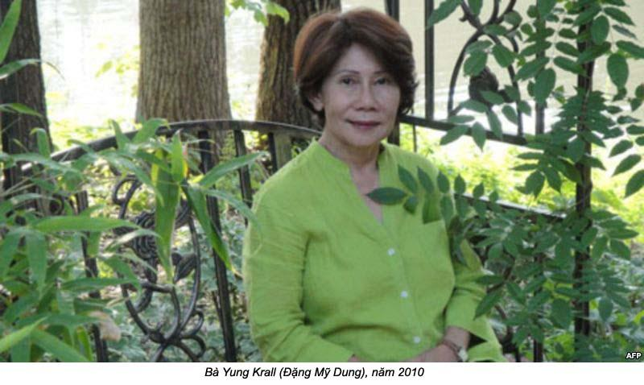

Chương 2

hỉ một thời gian ngắn sau khi gia đình tôi đến “cái đất trời hại” này, nhiều cơ quan khác của Việt Minh cũng nối đuôi theo. Họ lập ra trường huấn luyện quân sự để đào tạo bộ đội trẻ. Cậu Chín Thuỷ, em của má tôi đến mở nhà in để làm báo, in truyền đơn cho những hoạt động của Việt Minh. Nhiều cơ quan khác mọc lên để huấn luyện thanh niên nam nữ. Cán bộ từ phương xa đến, có người nói giọng Nam, có người nói giọng Huế, giọng Trung; và có cả người nói giọng Bắc. Các anh chị tôi thường bàn tán với nhau: “Chú này ở đâu, cô nọ ở miền nào”. Riêng tôi, biết là họ đến từ “bốn phương tám hướng” như lời cậu Hai Hợi nói. Cậu không thích họ, vì họ không phải là người miền Nam. Cậu kêu họ là “người Huế, người Sâm, người Bắc Kỳ”. Đối với ba tôi thì người ở miền nào đến đây cũng là đồng chí của ông.
Ba tôi cho anh Khôi và hai chị Kim, Cương biết là tổ chức sẽ mở trường học. Trong khi chờ đợi, ba bắt mấy anh chị lấy sách ra, tự mà học. Anh Khôi khao khát học hỏi, nên tự khép mình vào kỷ luật của chính anh. Nhpừ vậy, anh học một cách dễ dàng và chăm chỉ. Ngược lại hai chị Kim, Cương cằn nhằn là học mà không có bạn học thì học không vô. Nhưng hai chị cũng phải học dưới đôi mắt của ông “giám thị”. Đặng Văn Khôi.

Dọn đến Ba Ngọn khốn khổ bao nhiêu thì xa Ba Ngọn lại đau lòng gấp bội. Mấy chục bụi sả vừa bén thì ba tôi cho gia đình biết là ba sẽ dẫn chúng tôi đi một nơi khác. Ai nấy không nói một lời nào để bày tỏ sự bất mãn đối với ba. Nhưng người nói tổ chức của người ở một nơi xa xôi chưa ai trong tổ chức đặt chân tới, tên là Kim Qui. Ba vẽ trên mặt đất cho anh Khôi thấy Kim Qui ở đâu. Nó là một khu rừng tràm sát bên rừng U Minh, có con kinh chạy ra biển, gần Đá Bạc, cũng còn trong vùng giải phóng ở Rạch Giá. Thế là có sự hiện diện của nhiều khuôn mắt “đưa đám” trong nhà. Má tôi, anh Khôi, hai chị Kim, Cương cằn nhằn rằng ba tôi coi gia đình còn thua mấy bụi sả. Rễ vừa mọc ba lại muốn nhổ đi trồng chỗ khác.
Rồi tôi không nghe ba má tôi nói chuyện với nhau như mọi bữa. Sự yên lặng giữa hai người lên đến độ khó thở cho con cái. Ba biết má giận lắm. Nhưng tôi biết, lúc đó nếu ông trời xuất hiện cấm ba tôi dọn đi, ông cũng không nghe. Đâu có ai ép buộc được ba đi Kim Qui. Ông muốn đi, vì ở đó người ta cần ông. Trong trí óc trẻ thơ tôi nghĩ rằng khi được người ta cần, coi bộ rắc rối chớ không vinh dự gì, nhưng ba tôi thì vui như anh em tôi đón Tết.
Hành trình từ Ba Ngọn đến Kim Qui dài lê thê và tẻ nhạt như cháo trắng không đường. Tôi không nhớ đi mấy ngày thì đến Kim Qui, chỉ nhà là đêm đi, ngày nghỉ; hay nói đúng hơn là đêm đi, ngày trốn. Ghe chúng tôi chỉ đi ban đêm. Vì đi trên sông cái ban ngày sợ đụng đầu với tầu chiến hoặc máy bay thám thidnh. Ba và anh Khôi thay phiên nhau thức, ngồi ở mũi thuyền canh chừng mà không để đèn được. Người đi ghe nghe được tiếng mái chèo trong đêm vắng, nếu nói “bát” là đi phía bên phải, “cạy” là đi phía bên trái. Người đi trên sông ngày đem đã ăn ý với nhau, vì vậy xuồng ghe đi ban đêm, dù không sao không trăng cũng không bị đụng nhau.
Có một đêm, anh Khôi bỏ gác để đi ngủ, chẳng may ghe chúng tôi đụng phải ghe của người khác. Đó là ghe của một cặp vợ chồng. Chúng tôi hoảng hốt thức dậy và tuá ra coi. Người đàn bà ở ghe kia to tiếng chửi cậu Hai túi bụi. Nào là cậu đui, nào là cậu điếc vì không thấy ghe của bả. Cậu nói với người đàn bà kia: “Anh bụm cái miệng con vợ anh lại, không là tôi cho bả một chèo cho hết nói đó”. Sau đó, đường ai nấy đi. Anh Khôi xin lỗi cậu Hai cái tội bỏ gác. Nhưng cậu Hai cưng chúng tôi lắm. Cháu của cậu đâu có lỗi; lỗi ở cái miệng hỗn láo của con đàn bà kia.
Má tôi ru cho em ngủ lại khi ghe lại bắt đầu lướt sóng: “Trên dòng sông Lô, thuyền tôi buông lái như xua, sau lúc phong ba, thuyền tôi qua bến qua bờ”.
Không ai tưởng tượng được Kim Qui là một nơi như thế nào trên mặt đt này. Anh Khôi nói Kim Qui có nghĩa là con rùa vàng. Đá Bạc là cục đá bằng bạc, như trong chuyện “Cây đèn thần”, anh Khôi lại nói có thể nơi này xấu quá, người ta đặt tên đẹp cho nó, để “đánh lừa những người dại như mình”.
Ghe từ sông cái cái rẽ vào một con kinh nhỏ. Chắc lâu lắm rồi không có ai đi qua con kinh này, nên lục bình và cỏ mọc đầy kinh. Ghe đi được một khoảng thì chèo không được nữa. Cậu Hai gác mái chèo lên. Ba tôi và anh Khôi chống xuồng bằng sào tre trong khi cậu Hai lom khom trước mũi ghe, dùng cây mã tấu khai quang cho ghe từ từ đi sâu vô rừng thẳm. Hai bên bờ lau sậy che mắt chân trời. Tôi nghĩ là mình đi lạc vào một thế giới khác, như những nơi xa lạ trong truyện cổ tích mà ba má tôi thường kể cho chúng tôi nghe. Tôi bắt đầu sợ ma, nhưng không dám cho ai biết, sợ ma nó nghe.
Người ta hay nói “muỗi đầy như trấu”. Mà thật ở đây muỗi nhiều lắm. Nhưng bấy giờ là đêm giữa ban ngày, vì chị em chúng tôi lúc nào cũng phải chui vô mùng tránh muỗi. Tội nghiệp con chó Nô, vì nó là chó nên không được vô mùng như chúng tôi. Nên bị muỗi bu đến, con nào con nấy bụng no tròn đầy máu của nó. Sau anh Khôi phải cho nó xuống nằm dưới lượm ghe. Chắc má tôi giận lắm, nhưng chỉ để bụng. Ba không hề lên tiếng trách móc than thở, chỉ vừa nấu cơm vừa hát nho nhỏ: “Rừng Kim Qui có tiếng muỗi nhiều, nó bay vi vo. Anh chị tôi nhìn nhau cười khúc khích.
Đoạn đường dài trong khu rừng già này cũng làm cho ba má tôi già theo vì vất vả. Anh Khôi, chị Kim, chị Cương khóc than sau lưng ba. Má tôi chinh phục rừng thiêng bằng sự yên lặng chịu đựng của bà. Cậu Hai Hợi lấy hết sức mạnh của một người nông dân để đưa chúng tôi đến nơi đến chốn. Chỉ có ba tôi là người hớn hở mong cho mau tới nơi.
Bị ngồi trong mùng mấy ngày, tôi chịu hết nổi. Ra ngoài bị khói vô mắt vì trước mũi ghe có cái lò ràng hun khói bay mịt mù để đuổi muỗi. Tôi hỏi anh Khôi: “Nếu em ra ngồi sau ghe cậu Hai cho muỗi cắn, rồi bị rét rừng, anh có nghĩ là ba sẽ quay trở lại nhà ở Ngả Cũ không anh?”. Anh lắc đầu: “Mình theo ba ở gần ba, cưng à”. Không chịu thua, tôi nghĩ tới con rắn hổ cậu Hai chặt chết lúc lên bờ mót củi để hun. Tôi lại hỏi anh: “Nếu rắn hổ cắn em bị nọc độc, ba có trở lại không?”. Lần này, anh Khôi đổ quạu, nạt tôi và cấm tôi hỏi ngu nữa.
Rồi ghe ghé lại ven một khu rừng tràm. Gốc cây mọc từ dưới nước lên, đậm đen; ngọn cây cao vút lên tận mây xanh. Nhiều tiếng chim kêu ríu rít. Anh Khôi nhại giọng chim trả lời nó; rồi lũ chim trên cành hót với nhau. Anh yêu thú vật lắm. Anh biết nhân dân loại loại chim, giống thú. Lần đầu tiên trong chuyến đi, ba tôi mới thấy nụ cười của thằng con trai cũng của ông, nên ông hài lòng lắm. Ba con dụ anh là ở Kim Qui có mèo rừng, có cả hổ nữa, anh Khôi khoái lắm.
Có lẽ chính quyền cách mạng địa phương đã báo trước, nên nơi đến, có mấy người ra đón; đó là gia đình một ngư phủ. Họ mời chúng tôi lên nhà, rồi làm cơm thết đãi chúng tôi. Những ngày phải ăn những bữa cơm nhạt nhẽo trên ghe, phải ngồi tring mui ghe mà ăn nên cảm thấy tù túng mất ngon. Lúc này có cá lóc nướng trui, cá khô kho tiêu, có gỏi ngó nữa. Ông bà chủ nhà còn sai người con trai lớn bắt vịt nấu cháo nữa. Mùi thơm của cá nướng cũng đã đủ làm tôi thèm chảy nước miếng rồi, nói chi đến cháo vịt. Ông chủ nhà tên là ông Tư Tháo, ông lớn hơn tuổi ba tôi nên chúng tôi kêu ông là Bác Tư. Bác Tư vận quần xà lỏn đen. Cái áo bà ba đen bạc mầu của bác có nhiều miếng vá, nhưng bác không nghèo, vì bác có nhiều hồ cá, có đất, có rừng tràm chim bay thẳng cánh. Bác khoẻ mạnh, mặt tươi vui như đang ở hội hè, đình đám. Bác gái cũng vui vẻ, đon đả với chúng tôi.
Bác Tư gái dọn cơm trên một bộ ngựa, một bên cho đàn bà và con nít, một bên cho ba người đàn ông. Ngoài ra, con mấy cái đũa để cúng người đã khuất. Gia đình tôi thì khác. Đàn ông, đàn bà, con nít và người đã khuất ngồi ăn chung một bàn. Ăn xong, ra sân chơi, tôi nói nhỏ với anh Khôi là chắc con nít ở đây ăn uống hỗn láo nên mới bị bị hai bác Tư bắt ăn riêng. Thế là anh Khôi củ cho tôi một cái.
Tôi hỏi anh tại sao khi ăn, con bác Tư từ lớn tới nhỏ đều nhìn mình không chớp mắt. Họ chẳng nói năng gì hết, trừ hai tiếng “có”, khi anh hỏi chuyện. Mấy đứa nhỏ cỡ tuổi tôi và Hải Vân thì thầm với nhau rồi cười khúc khich. Anh giải thích là chúng nó chưa bao giờ gặp người lạ nên bỡ ngỡ, rụt rè. Anh đã hiến kế dậy chúng học, vì chưa có đứa nào biết chứ, kể cả hai thằng lớn hơn tôi.
Ít ngày sau, bác Tư trai dẫn gia đình tôi đi quan sát một giải đất dọc bờ kinh để chọn một miếng đất tốt cất nhà. Đó là đất đất hoang, lau sậy mọc cao khỏi đầu người. Đi được một đỗi, bỗng cậu Hai Hợi nổi giận bỏ xuống ghe. Cậu không tin là người đàn bà nhỏ yếu cậu quý như em cậu mà đến chỗ nước mặn đồng chua này để tìm đất cất nhà, trong khi cha mẹ ở một làng có ruộng đất phì nhiêu.
Mỗi lần buồn hay giận, cậu thường lấy rượu để giải khuây. Khi uống rượu, cậu không muốn nói chuyện với ai, chỉ khóc thôi. Má tôi phải xuống ghe năn nỉ cậu và xin cậu đừng buồn. Má cho biết sẽ mướn người đốn cây, phá rừng để cất nhà. Cậu vừa khóc vừa nói: “Làm sao cô với sắp nhỏ ở chỗ này được! Cái chỗ trời quên đất bỏ này, cô Tám?”. Má tôi trấn an cậu: “Người ta ở được thì mình ở được, anh Hai đừng lo”. Nghe má tôi nói, tôi mừng trong bụng, tin rằng khi má nói vậy với cậu Hai là má đã tìm ra bí quyết sống ở Kim Qui với bác Tư gái. Cậu cho biết cậu không bao giờ nói dối ông bà ngoại, nhưng lần này về nhà, cậu sẽ phải giấu ông bà ngoại sự thật về Kim Qui.
Sương hãy còn đọng trên cây cỏ, lau sậy, mà má đã dậy sớm cho anh chị em chúng tôi lên bờ, tại miếng đất đã chọn để cất nhà. Bà đặt mấy chén cơm và một ít muối trên mặt đất, rồi đốt nhang khấn vái. Bà xin ông Thổ thần che chở, phù hộ gia đình tôi. Bà xin vong linh của những người đã khuất, từng sống và chết trên miếng đất này, cho chúng tôi ở nhờ. Câu vái van này làm tôi sợ ma suốt thời gian ở Kim Qui và tới lớn luôn.
Những người thợ rừng từ một trại cưa đến với thợ cất nhà để gặp ba tôi và cậu Hai Hợi. Họ bắt đầu đốn cây, đốt những bụi rậm. Con nít phải ngồi dưới ghe, không được lên bờ vì thợ rừng vừa đập chết mấy con rắn hổ. Tôi không thấy rắn, những thấy có mấy con rùa bị nướng cháy, mây ông thợ mộc ăn ngon lành. Tôi mừng là ba tôi không nhập tiệc với họ, vì tối đó trong bữa cơm dưới ghe, cậu Hai kêu họ là “đồ mọi rợ”. Cậu ăn chay mỗi tháng hai lần. Cậu Hai Hợi lớn hơn má tôi năm, bảy tuổi, là một nông dân chất phác, lễ độ, trung tín. Cậu là người cùng làng, nhưng thương má tôi như em ruột. Dù cậu không phải là họ hàng với ba má tôi, hay là một nhà cách mạng từ Bắc vào Nam để truyền bá chủ nghĩa cộng sản của Hồ Chí Minh, nhưng cái gì cậu đây là tôi nghe, những cái gì vâuk làm, tôi bắt chước. Tôi biết mài dao với nhào đất bùn là do cậu dậy.
Căn nhà mới được dựng trên một mảnh đất cao, cửa trước trông ra bờ kinh, cửa sau nhìn vào rừng tràm. Bác Tư Tháo cho cái sân nước sau hè, nằm trên cái ao cá lớn của bác. Bác cho phép chúng tôi tự do câu cá lên ăn. Chừng nào hết cá, bác sẽ cho bơm nước vào ao. Thật ra, nếu chúng tôi ở Kim Qui suốt đời chắc cũng chẳng hết cá của bác. Bác còn một cái đìa lớn hơn, nước trong vắt. Chúng tôi tôi hay nằm trên cầu nhìn bóng mình trên mặt nước. Cá trong cái hồ này, bác đem bán ngoài chợ Kim Qui.
Vì không phải là thợ cất nhà, nên suốt thời gian thợ mộc làm, ba và anh Khôi chỉ đừng nhìn thôi. Tuy nhiên, hai người có một công tác không kém phần quan trọng, là cất cây cầu tiêu với bốn cách che cao, có nóc lợp bằng lá dừa. Một hôm, có một nhỏ tên Xom ở xóm chài hỏi vô chơi. Nó nói với anh Khôi “cái cầu tiêu của anh tốt quá làm sao ai dám?”. Anh em chúng tôi cười lăn ra. Ba tôi thì hãnh diện về cái cầu tiêu “tốt quá” của mình.
Chúng tôi vừa dọn lên nhà mới thì mùa mưa tới, mưa như cầm tĩnh mà đổ, mua một trăm ngày, một trăm đêm, đúng như tôi thường than thở, mưa cho tôi không còn thấy được rừng tràm sau hè. Trời gầm, sấm sét, làm con chó Nô ngồi đứng không yên. Đất sét trên bờ chảy xuống làm cho nước sông vừa bẩn vừa đục. Mưa như vậy cá không ăn câu, nhưng có cái thích của nước lũ là tắm sông “đã” lắm! Nước ấm thì trầm dưới nước lâu không bị lạnh. Vui hơn nữa, là nước phù sa đóng từ trên đấu xuống tới chân. Hải Vân và tôi kêu cả nhà ra coi hai con khỉ lông lá. Sau đó hai chị em đứng dưới máng xối để má tôi tắm cho sạch bằng nước mua, rồi mới được vô nhà. Những tóc chưa khô, khi em lại nhảy xuống sông nữa. Cứ như vậy, hai chị em tôi vui chơi suốt mùa mưa.
Có thể Kim Qui đúng là nơi “trời quên, đất bỏ” như cậu Hai nói. Nhưng lúc Thượng đế bỏ Kim Qui mà đi, ngài cũng có để lại một vài tạo vật. Dù đất chai cứng, trong rừng không có một cái gì cho loài người có thể ăn được, chỉ có trái nhãn lồng, nhưng dưới sông, dưới kinh, và trong những ao đầm, có đáy các loại cá.
Trong rừng, khi nước lụt, cá cũng lên đẻ. Một hôm anh Khôi đi rừng về, hớn hở dẫn chị em chúng tôi vào rừng bắt cá. Chúng tôi chỉ ngồi, đưa hai tay bắt. Trong chốc lát cá đã đầy cả ba cái cần xé, đến nỗi nặng quá không xách nổi. phải bỏ bớt lại.
Hạnh phúc của tôi lúc đó là tôi đã đủ lớn để biết được những phút giây đầm ấm có má, có ba, và anh chị em chúng tôi trong một mái nhà ở giữa rừng già. Những kỷ niệm do nuôi tâm hồn tôi, như má tôi nuôi tôi bằng sữa. Trong căn nhà đó, có đêm ba tôi đờn, chúng tôi tôi hát, anh Khôi đánh muỗng. Có đêm, má tôi kể chuyện đời xua. Có đêm, ba tôi bắt chúng tôi đấm bóp cho ông rồi ông mới kể tiếp chuyện Thần hổ xám. Thế là chúng tôi phải làm theo ý ba để nghe chuyện. Ba tôi thường kéo câu chuyện cho dái thêm ra, để hôm sau lại được đấm bóp.
Tôi cám ơn Thượng để đã cho ba tôi có một thời, dù ngắn ngủi, được cái diễm phúc làm con của ông bà nội tôi, làm chồng má tôi, làm cha chúng tôi, làm người Việt Nam có tự do yêu nước, có tự do đánh đuổi quân thù xâm lăng bờ cõi. Tôi thương ba tôi có những năm tháng dài chịu cảnh cô độc ở ngoài Hà Nội. Ông bỏ lại nơi chôn nhau cắt rún người vợ hiền và sáu đứa con thơ. Kể từ đó, tôi không biết ba tôi nghĩ gì? Lòng yêu nước của ông, một người đã dám làm cách mạng cứu nước ở tuổi còn xuân, tìm ông có bị rỉ máu khi đã nhận ra sự thật của chủ nghĩa cộng sản, hay đã biến thành chai đá? Tôi hoàn toàn không biết, đến giờ này, ba tôi đã ra người thiên cổ, tôi chỉ biết ông yêu má tôi trọn đời. Ông chung thuỷ với bà trọn vẹn, và ông yêu chúng tôi vô bờ bến. Đó là hạnh phúc của chúng tôi, và cũng là nỗi đau cho một gia đình phải xa cách để tồn tại.
Ở Kim Qui chỉ có cây chuối là sống được thôi, nhưng trái chuối thì ốm nhom như mảnh đất nghèo nàn này. Cá là món ăn trường kỳ của gia đình tôi. Sáng ăn cháo cá, trưa ăn canh cá, đến chiều ăn cá nướng, cá kho, cá muối xả ớt… Nếu có đổi món. Là đổi loại cá thôi. Thỉnh thoảng, người đi biến về ghé qua cho tôm, cho cả biển. Khi nào anh Khôi bơi xuồng đưa má đi chợ ngoài Kim Qui mới mua được thịt heo. Anh Khôi hỏi tại sao mấy con vịt nuôi lâu lớn quá. Chị Kim và chị Cương vội cho biết là con vịt đó của hai chị là súc vật nuôi làm cảnh, không phải để ăn thịt. Nhưng tôi nhớ là mà đã làm thịt một con vịt nhân dịp ba tôi ở xa về.
Hai chị em của tôi không thích đời sống khó khăn, thiếu thốn ở Kim Qui. Ai cũng không thích ứng với đời sống của tiều phu, vì dân thị thành và ba con thân thuộc. Có lần chúng tôi hết kem răng, phải đánh bằng muối! Xá bông thì quí như thuốc men, tiếp tế chậm và thất thường. Hồi còn ở Ong Vèo, mỗi lần tắm, tôi xài xà bông thả của. Nhưng ở Kim Qui, chúng tôi phải hà tiện lại, không dám đem xà bông xuống sông, sợ lỡ tuột tay thì mấy luôn.
Rồi đến cái nạn hà ăn chân. Ai cùng bị hà ăn chân, chỉ trừ má. Chúng tôi ham chơi, lội sông, lên rừng, xuống rãnh suốt ngày. Ba tôi đem phèn chua về cho hai chị ngâm chan. Tôi ham chơi không chịu ngồi ngâm. Anh Khôi đi qua đi lại, nhìn hai chị rồi ghẹo: “Một lần cho tởn tới già. Đừng đi nước mặn mà hà ăn chân”. Ba tôi nó nói khi nào mình rời khỏi Kim Qui sẽ hết hà ăn chân. Nhưng lời đó chỉ làm ba bị rắc rối thêm thôi, vì chị Kim liền hỏi: “Chừng nào mình rời khỏi Kim Qui hả ba?”. Ba không trả lời.
Riêng tôi, tôi lại thích Kim Qui vì chúng tôi không phải chạy trốn máy bay như những nơi khác. Tôi cũng không nghe nói có người bị máy bay bắn chết trong khu rừng này,
Chúng tôi sống lẻ loi, đơn độc, mà ba tôi lại hay vắng nhà. Ông thường đi với những người từ ngoài Bắc vô. Nếu có ở nhà, ông vẫn bận rộn với công việc, và hội họp với các đồng chí của ông. Những lúc ba tôi vắng nhà, không một người khách nào tới thăm. Ngang sông, chỉ có bác Mười Cử vợ chết, người chị và người con gái của bác là chị Kỳ Hoa, thường qua lại với chúng tôi bằng cầu khỉ khi do bác Tư và anh Khôi bắc. Anh Khôi để ý chị Kỳ Hoa, nên chỉ một mình anh âm thầm thích Kim Qui. Gần Tết, chúng tôi nhận được tin mưdng là anh Chánh, con của thấy Mười, bạn của ba má tôi ở chợ Cần Thơ, sẽ về ăn Tết với chúng tôi. Cả nhà chưa ai gặp anh Chánh lần nào. Anh Khôi và tôi mong cho ngày qua mau, để sớm được gặp anh Chánh.
Không như bà con của chúng tôi ở Bang Thạch thường tới với cây trái, gạo nếp, bột đường, áo mới, anh Chánh đến với chiếc ba lô nghèo nàn của một anh bộ đội. Anh có cái khăn bàn cũ kỹ, cái áo bằng kaki, cái bàn chải đánh răng mòn hàng xuương, cái chén làm bằng miếng dừa khô bóng loáng, đôi đũa vót tròn ở hai đầu. Để giữ vệ sinh chung, các anh bộ đội trở đầu đũa để gắp thức ăn. Sự thất vọng vì không có quà chỉ thoáng qua, vì được gặp anh là đủ rồi. Anh đến như Xuân về, Tết đến. Anh là áo mới. Anh ngọt hơn mứt dừa. Anh vui như đoàn văn công về làng. Anh nồng nhiệt và gần gũi như đứa con mới đi xa về thăm cha mẹ, thăm đàn em dại.
Anh Chánh lớn hơn anh Khôi. Anh cao như ba tôi. Anh kể cho má tôi nghe những khó khăn cách trở khiến cha mẹ anh không thể đi lại thăm hỏi gia đình chúng tôi. Anh cũng cho biết, từ ngày vào chiến khu, anh chỉ có thể về thăm ba má anh có một lần ở Cần Thơ. Sau đó, hoàn cảnh không cho phép anh rời vùng giải phóng. Đã có người bị Tây bắt, mà cũng có người bị Việt Minh giữ để tra khảo. Lại có người bị lạc đạn chết khi hai bên đụng độ. Có người lặn lội tìm thăm con, tới nơi mới biết đơn vị của con đã dời đi nơi khác, mà đi đâu là điều bí mật của chính quyền Việt Minh, cho nên không ai cho biết là đi đâu. Gia đình tôi cũng không lạ gì việc thăm viếng khó khăn này, vì ba má tôi đã cho không biết bao nhiêu thân nhân của những người đi theo kháng chiến từ ngoài thành đến tá túc.
Anh Chánh báo một tin mừng cho anh Khôi, là trường nội trú đã hoàn thành, anh Khôi nên sửa soạn ngay để đến miệt Bạc Liêu nhập học. Tin này bỗng biến anh Khôi trở thành một người con ngoan ngoan. Anh gánh vác hết mọi việc nặng, nhẹ trong nhà. Anh cửa củi xếp chung quanh nhà cho má. Anh cắt cỏ, anh dọn dẹp sạch sẽ con đường từ nhà tới cầu tiêu. Đó là việc mà hai chị Kim, Cương nằn nì anh làm cả tháng trước, nhưng anh cứ làm ngơ.
Trong dịp nghỉ phép ở nhà tôi, anh Chánh muốn câu cá lắm, vì ba tôi đã khoe là Kim Qui có cá lội đầy sông. Tôi giành dẫn anh đi câu ở cái đầm mà tôi tin anh sẽ mê lắm. Đó là cái đầm mà bác Tư nuôi cá chớ lớn sẽ đem ra chợ bán. Anh vừa thả câu mà đã có một con cá lóc tợp mồi liền, rồi con thứ nhì, con thứ ba… Nhưng câu cá nuôi dễ dàng quá làm anh chán, không thích câu trong đầm nữa, mà muốn câu cá dưới kinh, nên chúng tôi bơi xuồng vô một con kinh nhỏ.
Anh Khôi hay nói chuyện của người lớn, chuyện giết giặc, chuyện yêu nước, chuyện quân thù… Có một bữa, anh Khôi lấy hai viên đạn của anh Chánh, cậy thuốc súng ra rồi rải một đường dài dọc mé sông, anh quẹt lửa đốt, thuốc súng cháy một đường dài sáng trưng. Tôi hít mùi thuốc súng và hiểu được bí mật của sự hăng say của các anh bộ đội khi nghe mùi thuốc súng, nà anh Chánh kể lại.
Anh ăn Tết với chúng tôi rồi trở về đơn vị. Anh đi, nhà bỗng trở nên trống vắng. Không biết tôi yêu anh Chánh hay yêu anh bộ đội. Anh yêu nhà, yêu nước, yêu lũ em nhỏ như chúng tôi. Anh đâu biết sau này khi lớn lên tôi yêu quê hương cũng do anh đã ươm mầm cho tình yêu đó nẩy nở trong lòng tôi.
Ba về nhà sau một chuyến công tác lâu ngày, nhưng tôi không nhớ chắc là bao lâu, tôi chỉ nhớ rằng khi ba tôi vừa đi khỏi, chị em chúng tôi bị nhặm mắt. Khi ông về, chúng tôi đã hết bịnh. Như vậy có thể là ông vắng nhà khoảng hai hay ba tuần lễ. Trong bữa cơm tối hôm đó, ba cho gia đình biết ba sẽ dẫn anh Khôi xuống Bạc Liêu đi học. Anh sung sướng lắm. Nhưng tôi lại tháy buồn vì sắp phải xa anh. Sự học của anh Khôi đã bị gián đoạn một năm trời. Cái chết của anh Liêm tôi trước đây còn ám ảnh tôi hoài. Vì vậy, tôi lại lo sợ vẩn vơ, rủi anh Khôi cũng bị Tây bắn đọc đường thì sao? Anh Liêm chết, gia đình không thấy xác, mà người trong làng chôn anh rồi cho ba má tôi hay tin. Đêm đó tôi thao thức ngủ không được, nhưng tôi không dám nói với ai.
Đối với anh Khôi, việc học quan trọng hơn thức ăn, mạnh hơn kí ninh vàng trị sốt rét trong khu rừng già này. Anh có những ước mơ lớn lắm, những chiến tranh làm việc học của anh bị gián đoạn, nên những giấc mơ cũng vỡ theo, trong những cảnh sụp đổ, tan nát vì những cuộc oanh tạc của máy bay Pháp.
Cả nhà sửa soạn nhộn nhịp cho anh Khôi lên đường. Má tôi may cho anh hai chiếc sơ mi trắng cụt tay bằng xấp vải bàđể dành từ lâu. Chị Kim tặng anh hai khăn tay chị đã cất kỹ. Chị Cương mở túi nhái lấy tiền cho anh. Tiền này chị để dành chờ hết giặc mua đôi bông. Tôi không có gì để tặng anh, nhưng tôi tin rằng dù ở xa đến đâu anh vẫn không quên tôi. Hoà Bình theo hôn anh hoài, và để anh vui, nó không bỏ mứa khi anh đút cơm cho nó chiều hôm đó. Hải Vân đờn mandoline cho anh Hai nghe.
Sau khi anh Khôi đi, nhà tôi trống vắng một cách lạ thường. Không còn một dư vang nào của anh. Chúng tôi chỉ nghe tiếng má hỉ mũi; má khóc một mình. Má nhớ thương con trai cưng của má. Tôi bắt đầu gần gũi với hai chị Kim, Cương hơn trước, hai chị cho tôi vô ngủ chung một giường.
Lúc học trường nội trú ở Bạc Liêu, cả hai chị đều thích hoạt động văn nghệ và đã từng đóng kịch trong trường. Vì vậy, khi về nhà hai chị ca hát suốt ngày. Cả ba và anh Khôi vắng nhà cùng một lúc, làm chúng tôi buồn quá, không ai chịu ngủ trưa. Hai chị tập cho tôi và Hải Vân đóng kịch. Tôi được làm y tá, Hải Vân thì đóng với anh bộ đội bị thương. Chị Kim là bác sĩ quân y, chị Cương đóng với một quả phụ, chồng là bộ đội đã hy sinh ngoài mặt trận. Mỗi lần chúng tôi đóng kịch, Hoà Bình bỏ đi theo má chắc nó không thích nghe bà quả phụ khóc chống não nuột lắm. Mỗi lần chôn anh bộ đội, tôi hay hỏi chị tôi: “Hồn của anh ấy đi đâu?”. Chị Kim trả lời rằng ảnh về phù hộ cho vợ. chúng tôi không bao giờ nghe nói đến thiên đàng, chỉ nghe hồn người chết thường vấn vương theo người họ thường mến, đi bất cứ đâu. Hồi ở Ong Vèo, chị Hiển hay kể chuyện ma, chuyện người chết đi đâu và ở đâu cho chúng tôi nghe. Có lẽ vì không muốn chúng tôi tin những điều mê tín dị đoan ấy nên ba má tôi trả chị Hiển về gia đình chị, nhưng lại lấy cớ là muốn bảo vệ tánh mạng chị.
Mùa thu năm 1953, ba tôi lại được lịnh đổi đi nữa. Chúng tôi lại thu xếp dọn nhà. Anh Khôi phải tạm xếp bút nghiên để về phụ má. Anh làm việc “cực như con trâu của ông Tư Nhờ”. Anh nửa đùa nửa thật, nói rằng anh ước anh biến thành một thiếu nữ, để anh có thể lấy một tấm chồng, rồi bắt chồng ở rể trong mấy ngày ba má dọn nhà. Cậu Hai Hợi xuống tiếp sức với chúng tôi. Những người đàn ông ở xóm chài lưới cũng vô phụ giúp. Rồi cùng vợ con, và cái tài sản khiêm tốn và con chó, người dân đầy nhiệt tình yêu nước, xuống ghe đi theo tiếng gọi của non sông. Chúng tôi đi đến Cảng Chú Hàng.
Đây là một trong những thôn làng thuộc tỉnh Chương Thiện, dân chúng đông hơn những nơi chúng tôi đã đi qua. Cảng Chú Hàng một nơi mà mỗi buổi sáng lá cờ giải phóng ngang nhiên phấp phới trong gió. Những người yêu nước đã từ bỏ cuộc sống riêng tư, tự về đây để cùng nhau bảo vệ quê cha đất tổ.
Người ta đắp càng bằng hàng ngàn cây tràm, cây đước, cắm ra đáy sông, chỉ chừa đủ cho ghe xuồng nhỏ đi qua. Tầu chiến của Tây không vào được vùng giải phóng. Lúc cảng mới dựng, tụi Tây lợi dụng khi nước lớn đã xấn vô trong, nhưng chúng đã bỏ thây ở đây không ít.
Tôi ở cách cảng Chú Hàng ba cây số, cũng do tay cậu Hai dựng. Nhà này giống y nhà ở Kim Qui. Chỉ nền nhà và đất là khác thôi. Bà chủ đất là một bà chủ điền giầu có. Sau khi gặp ba má tôi, ba liền bảo chúng tôi kêu bà bằng ba nội. Thì ra bà từng là một bà mẹ chiến sĩ. Ba tôi kêu bà bằng má nhưng má tôi chỉ kêu bà bằng bà thôi. Má nói chỉ có bà ngoại là má của bà thôi.
Đất này lành nên chim đậu, ca hát líu lo. Cậu Hai cất nhà gần. Anh em chúng tôi tôi chỉ chạy vài bước là phóng ngay xuống nước vào những buổi trưa nóng bức. Ở đây lại gần làng của ông bà ngoại, nên bà con ở Bang Thạch vô thăm thường hơn. Do và con thăm viếng, má tôi bớt lẻ loi. Điềi tôi mê nhứt là ai vô thăm cũng có quà mua từ ngoài thành cho anh chị em chúng tôi. Ba tôi đi công tác thường hơn, lâu hơn. Mà không hiểu sao các đồng chí của ba tôi biết giờ giấc ba về mà họ kéo đến nhà. Ba không có khách bà con, mà chỉ toàn các đồng chí đến hội họp và thảo luận. Họ “uống trà quạu” để thức khuya. Nhiều lần tôi đã ngủ ngon lành trên vế của ba tôi giữa lúc ông và các đồng chí bàn việc nước, việc nhà, việc đảng phái.
Nhiều khách từ phương xa đến, nhưng họ và ba tôi không xa lạ gì nhau. Họ cùng một chí hướng là đánh đuổi quân xâm lăng, giành độc lập cho xứ sở. Họ là bác sĩ, kỹ sư, luật sư hay dược sĩ, giáo sư, sinh viên ở các trường đại học… Họ đến từ những thành thị, hoặc từ các vùng quê hẻo lánh. Kẻ giàu, người nghèo, đàn ông cũng có, mà đàn bà cũng nhiều. Người là trí thức, kử thuộc thành phần tư sản hay vô sản. Có những người đã từng du học bên Pháp. Họ làm việc cho Pháp nhưng lại chống đối Pháp. Họ cũng yêu nước như những người làm cách mạng trong bưng biền. Những người khách ấy dù không phải là họ hàng, thân thích, đều đem theo những niềm vui cho anh chị em chúng tôi.
Một hôm, ba tôi cho biết sẽ có một người khách rất quan trọng đến thăm. Khách chưa đến mà ba tôi đã nôn nao bàn tính với má tôi về cách đón tiếp ông. Lần đầu tiên tôi thấy má ghi chép những món ăn đặc biệt đãi khách. Mà muốn chỉ có ba anh Khôi ngồi ăn cơm chung với khách thôi. Những ba lại muốn cả gia đình cùng ăn. Mấy ngày sau đó, hai chị Kim, Cương dặn đi dặn lại đến mẻ răng, ba đứa em phải ăn uống cho đàng hoàng, nghiêm chỉnh. Nào là không được ngậm đũa, nào là cấm ăn bốc. Lúc nhỏ tôi hư lắm, cam đưa không vurng, nên hay bốc đồ ăn rồi ghim vô chiếc đũa. Anh Khôi không được đánh muỗng trên bàn ăn. Hải Vân không được gõ đũa trên miệng chén khi nhà có khách. Hoà Bình không được đòi ba bồng, để ba nói chuyện với khách. Những ba tôi thì nói cứ tự nhiên, với những sinh hoatbình thường của gia đình, không cần làm mầu làm mè trước mặt khách. Ba tôi dặn tôi và Hải Vân phải bạo dạn khi khách muốn nghe chúng tôi đàn hát.
Chúng tôi mong từng ngày, đếm từng giờ, chờ người khách quý đến chơi. Rồi cái ngày trọng đại đó cũng đến. Khách ở tận ngoài Hà Nội vô thăm Nam Bộ. Đó là ông Lê Đức Thọ, anh của chú Lê Đức Mai, người khách thường xuyên của gia đình tôi hồi còn ở Ong Vèo.
Bác Lê Đức Thọ lớn tuổi hơn ba tôi nên chúng tôi kêu bằng bác. Hai người tay bắt mặt mừng, khách vò đầu thằng em tôi rồi hỏi: “Kỷ niệm chiến thắng ở Đèo Hải Vân của chúng ta đây phải không?”. Hai ông đồng chí cùng cười. Bác Thọ đem theo một hộp nhỏ bằng cây, đẹp lắm, ông liệng cái ba lô vào một góc nhà nhưng ôm khư khư cái hộp cây rất cẩn thận. Tôi và Hải Vân tò mò, nóng lòng muốn chết, vì không biết cái hộp ấy là hộp gì. Bác Thọ hứa sẽ cho chúng tôi nghe tiếng nói của “Bác Hồ” phát ra từ cái hộp này.
Bộ óc ngây thơ non nớt của tôi cho rằng không ai có tài ảo thuật giỏi hơn anh Cầu của tôi. Hai chị em tôi sống trong vùng kháng chiến từ lúc mới sinh ra đời nên làm sao biết được đó là máy thu thanh. Chỉ có anh Khôi và hai chị Kim, Cương là ít hỏi, vì mấy người đã sống ở ngoài thành trước khi vô kháng chiến. Lúc bác Thọ vặn máy lên, cả nhà im lặng ngồi nghe diễn văn của “bác Hồ”. Những cái máy truyền thanh mới lạ đối với tôi và Hải Vân. Chúng tôi tò mò muốn biết làm sao mà ở mãi tận đây mà nghe được tiếng nói của “Bác Hồ” từ Bắc xa xôi. Lúc ông dứt lời, cả nhà vỗ tay reo mừng vì ông bảo “hoà bình sẽ tái lập từ ải Nam Quan cho đến mũi Cà Mau”.
Chú Hàng là thiên đàng, nếu so với rừng Kim Qui. Ở Chú Hàng, đồng xanh cò bay thẳng cánh, dòng sông dài âu yếm mảnh đất phì nhiêu. Vườn của bà nội cây trái xum xuê. Bà cho phép chúng tôi thích trái gì cứ ra vườn mà hái. Trên miếng đất bà cho gia đình tôi cất nhà, ở phía sau có xoài, mận, ổi, vú sữa, mãng cầu Xiêm, Le Ki Ma, Xa Bô Chê. Dù được ba đã cho má tôi vẫn cấm. Má dặn rằng nếu chúng tôi muốn ăn thì tới nhà bác Hai mà mua, hoặc hái trái xong phải đem lại nhà bác Hai tính tiền rồi mới được ăn. Nhiều khi mang rổ ôi hay quýt sang nhà bà nội, tôi đã ăn mấy trái trước rồi.
Một hôm trời nổi cơn giông bão làm con chó Nô sợ, chun xuống sàn, trong khi anh Khôi và tôi mừng quýnh, vì xoài ttượng bị rụng nhiều khi gio lớn. Má tôi cho phép chúng tôi lượm những quả rụng chớ không được hái trên cây. Hai anh em tôi vội chạy đến lượm xoài. Tôi còn nhỏ nên khiêng nổi được bốn trái lớn. Anh Khôi đuổi tôi vô nhà trước. Anh Khôi lanh trí… buộc túm quần lại, rồi lượm xoài bỏ vô. Một lát sau, trong bếp có một đống xoài tượng. Lúc cả nhà ngồi in xoài với nước mắm, hai anh em tôi nhìn nhau cười khúc khích. Má hỏi tại sao chúng tôi cười, anh Khôi bèn thú thật về cái “túi” đựng xoài. Má mắng yêu, trong khi cả nhà cười rộ lên.
Đã sống trong hiểm nguy như những gia đình Việt Minh khác, ơn trên, gia đình tôi cũng có những giây phút hạnh phúc trong tiếng vui cười, qua ánh mắt của cha mẹ. Có hôm, bà nội nói “Cảng Chú Hàng là đất lành, nên mặt má các con sáng như trăng rằm. Mặt má tôi “sáng như trăng rằm” vì má tôi đang mang thai.
Nhưng nơi đây cũng có một nỗi buồn, vì chúng tôi ít khi được gần gũi ba tôi, dù ôug ở nhà thường hơn đi công tác, bận hội họp liên miên, lúc thì với với các đồng chí ở trong bưng, khi thì với khách lạ từ bốn phương tới. Cứ ăn cơm chiều xong, nhà bắt đầu có khách. Tôi không biết ba tôi họp đến giờ nào, chỉ nhớ rằng ông thường đánh thức Hải Vân, Hoà Bình và tôi, để nói “Ba thương con lắm” và hôn chúng tôi trước khi đi ngủ. Buồn ngủ cách mấy, chị em tôi cũng vừa dụi mắt vừa nói “Con cũng thương ba lắm” rồi lại lăn ra ngủ tiếp.
Nhà đông khách, đông con nhưng ba má tôi vẫn tìm được những giờ phút riêng tư êm ái để tâm sự với nhau. Hai người có thói quen dậy thật sớm, ngồi trên bộ ngựa, bên cạnh bếp lử hồng bập bùng, nói chuyện thì thầm chờ ấm nước sôi pha trà. Điều lạ, là ban đêm ba má bất đồng ý kiến về chánh trị, cãi nhau hoài, vậy mà sáng, hai người lại cẩn trọng lời nói khi bấy giờ ngày mới, cũng những cứ chỉ tử tế, ân cần với nhau. Có lẽ ba má nghĩ rằng ban đêm bọn con nít ngủ hết, nên có thể tự do tranh cãi.
Thường thường sau khi uống trà, ba tôi tập thể dục. Tập Tài Chi và ăn uống điều độ, là hai điều ba tôi giữ đúng hàng ngày. Ba tôi tin rằng nếu giữ được tinh thần minh mẫn và thân thể tráng kiện, có thể ngăn ngừa được nhiều chứng bịnh. Ba tôi thường khuyên con cái theo gương ông. Anh Khôi và chị Kim là hai môn đệ trung thành. Hồi nhỏ, tôi rất kén ăn. Con chó Nô rất mến tôi vì tôi cho nó ăn cơm của tôi mỗi bữa. Đổi lại, tôi cũng thương nó lắm, vì nó đã giúp tôi thanh toán hết chén cơm tôi bỏ mứa.
Ba tôi thường dẫn má tôi và chúng tôi ra đồng để chờ mặt trời mọc từ những mái tranh phía bên kia làng. Ngồi bên bờ đê, ba má tôi nhìn chúng tôi chạy nhảy. Tôi không sao quên được gương mặt rạng rỡ và đầy tự tin của ba, khi người ngồi cạnh má tôi, đối với tôi lúc bấy giờ, ba má tôi là sự sống, là tình yêu, là trăng, là nước, là ánh sáng, là những bài hát ru em, là những bài ca yêu nước mà anh em chúng tôi đều được hưởng tất cả những nhiệm mầu này.
Ở cảng Chú Hàng, anh Khôi cứ mải mê với việc học. Ba tôi mang sách từ một trường ở một tỉnh khác trong vùng giải phóng về để anh tự học. Trường anh học năm trước đã bị Tây bỏ bom nát mất tiêu. Bạn học của anh kẻ chết, người tàn tật. Vì vậy, má không cho anh đi trường khác, sợ rủi ro. Vào những buổi trưa, khi cả nhà chìm trong giấc ngủ, chỉ có anh Khôi và tôi thức. Tôi không thích ngủ trưa, dù ông ngoại dặn đi dặn lại rằng “ngủ cho mau lớn, mau cao”. Anh Khôi thì lợi dụng sự yên lặng này để học bài. Tôi hay năn nỉ anh ngưng học để chơi với tôi, nhưng anh không chịu. Lúc bấy giờ tôi không hiểu tại sao việc học lại quan trọng như vậy. Anh giải thích là phải có bằng trung học mới lên đại học được.
Sống giữa làn tên mũi đạn, anh tôi không sợ chết, chỉ sợ lớn nên trở thành một người đàn ông dốt nát. Anh không cần quần là áo lượt, cần xa xỉ phẩm như hai chị của tôi, mà chỉ cần có cây đàn vĩ cầm, và cần đi học.
Gia đình tôi này dời, mai đổi, ba tôi đi vắng thường xuyên, chưa bao giờ anh chị em chúng tôi phải ở nhà một mình, lúc thì có mà; khi má đi vắng, chúng tôi có ba bên cạnh. Nhưng một hôm ba tôi thay đổi hẳn chương trình làm việc, vì ông phải sửa soạn đưa má tôi đi nhà bảo sanh. Trước đó mấy hôm, má tôi đã sắp xếp mọi việc đâu vào đó, vì má đã biết gần tới ngày sinh. Những gì cần đem theo, má cho vô một cái túi vải, và ghi những điều anh, chị tôi phải làm, rồi dán lên cây cột giữa nhà. Má còn dặn anh Khôi đừng làm phiền bà nội (bà chủ đất), trừ khi có gì liên quan đến sống chết. Anh chỉ chúng tôi mà nói “Như đám quỷ này chết đuối dưới sông”. Hai chị Kim, Cương liền hăm sẽ không nấu cơm cho anh ăn. Má tôi phải giảng hoà mới yên. Nhiệm vụ của anh Khôi là giữ Hải Vân. Chị Kim và Cương coi sóc Hoà Bình. Tôi phải vâng lời ba người lớn và không được xuống sông một mình. Má dặn nhiều lắm, ban đêm khi đi ngủ phải nhớ khoá cửa, mà viết cả trang giấy dán lên cột nhà.
Rồi khi chiếc ghe chở ba má tôi mất dạng nơi khúc quanh con sông, căn nhà bỗng tra nên trống trải, im lặng một cách khác thường.
Hoà Bình chạy ngày vô buồng của ba má lấy cái gối của má đem ra bộ ngựa gỗ, úp mặt lên gối, bắt đầu khóc thút thít. Tôi bèn doạ: “Nín đi, ông cùi nghe được ông bò tới cho mà coi”. Thế là nó vội liệng cái gối xuống đất, chạy lại ôm lấy chị Kim cầu cứu. Hai mắt nó ráo hoảnh. Má tôi đã câm tôi không được nhát em ông cùi, nhưng chỉ có ông cùi mới làm nó sợ mà nín khóc.
Nhà vắng tanh, không có gì thú vị hết, nên chiều đó hai chị cho chúng tôi ăn cơm sớm hơn mọi ngày, ăn cho qua ngày. Ăn xong, anh Khôi rủ chơi trốn kiếm, nhưng mới nửa chừng, tôi chưa kiếm được Hải Vân Ihi anh dẹp cuộc chơi.
Một lát sau bà nội và con Quít, cháu nội của bà tới thăm chúng tôi. Bà đem một rổ đầy bánh tét, banh ít và trái cây. Bà dặn chúng tôi khi má đem em về nhà, chúng tôi không được nói chuyện lớn tiếng, để má ngủ, và cũng không được gây nhiều tiếng động, sợ em nhỏ giựt mình. Hai chị Kim, Cương khỏi cần nấu cơm cho má. Bà và bác Hai gái biết món nào bồi bổ cho người mới sanh, ăn cho có sữa cho em bũ. Ba lãnh phần quan trọng đó. Bà căn dặn là má cần tĩnh dưỡng kỹ lưỡng, cần ăn uống đầy đủ bổ dưỡng, cho có sữa em bú. Bà tin dị đoan lắm, nên không quên dặn chúng tôi đừng khen em bé đẹp, sợ ma quỷ nghe được, sẽ bắt em đi.
Đêm đó, Hải Vân và tôi ngủ chung giường với anh Khôi. Hoà Bình ngủ với hai chị Kim, chị Cương trên giường của ba má. Hải Vân hỏi nhỏ anh Hai: “Má đẻ em nhỏ, có khi nào má chết không anh?”. Anh Khôi nạt: “Không, đừng có hỏi như vậy nữa nghe chưa!”.
Anh em chúng tôi nằm bên nhau trong sự im lặng và lo âu trong cửa nhà vắng vẻ. Tiếng muỗi kêu vo vi bên ngoài mùng. Tôi nhớ má, cắn gối dằn tiếng khóc, sợ Hải Vân tưởng má chết, tội nghiệp nó.
Sáng sớm hôm sau; chúng tôi nghe tiếng ba tôi từ xa vọng lại. Chiếc xuồng chèo chậm chạp trên nước ngược. Chúng tôi chạy xuống bến. Tôi không không chờ nổi nên bứi nút áo, liệng áo trên cầu, phống xuống sông lội ra phía chiếc ghe. Vừa lội, tôi vừa nghe ba tôi reo mừng: “Mà sanh em gái!”. Trên bờ tiếng anh Khôi vọng xuống: “Thôi rồi, thêm một đứa vô dụng, hung dữ vô cái nhà này nữa!”. Rồi anh cười lớn. Vô nhà, ba tôi kể lại chuyện má sanh em nhỏ. Ông trả lời hết những thắc mắc của anh chị của sức khoẻ của má. Rồi ông cho biết ông cần tắm rửa và nghỉ một lát trước khi phải đi xa ba ngày, ông cũng cho biết ông phải kịp về đón má và em bé về nhà. Chị Cương lo lắng, nếu nhỡ không kịp thì sao? Ba trả lời: “Má sẽ thông cảm cho ba”. Anh Khôi tỏ vẻ tức giận, hậm hực hỏi: “Tại sao má cứ phải là người “thông cảm” hoài vậy?”. Ba tôi tỏ vẻ không bằng lòng câu nói của anh, ông liền bắt hết anh chị em chúng tôi ngồi xuống, kể cả Hoà Bình dù còn nhỏ xíu cũng không được miễn. người ít rầy con cái, những khi cần rầy thì chúng tôi khổ lắm vì lại giảng đạo đức dông dài, làm chúng tôi chán vô cùng. Lần này ông “thuyết” về vấn đề “Tổ quốc và gia đình”, ông muốn chúng tôi giúp ông đặt tổ quốc trên gia đình.
Ba tôi đặt nhiều tin tưởng và trách nhiệm vào anh Khôi lắm, vì anh là cn trai trưởng. Anh phải làm gương cho các em. Trong lúc đó, anh bực bội nói: “Con chán cái nghề làm gương tốt lắm rồi. Nhiều khi con có cảm tưởng con là một ông già mười bẩy tuổi. Không ai nghĩ tới chuyện học hành của con. Ba phải để cho con được đi học trước khi râu con dài tới rún”.
Ba yên lặng ngồi nghe, rồi nghiêm nghị nói: “Con là đàn ông nhà này khi ba đi vắng”. Tôi nghe mà không hiểu ba và anh Khôi nói chuyện gì. Nhưng có một điều tôi biết, là tôi muốn anh tôi làm người lớn, vì làm người lớn là phải sống gương mẫu, phải hy sinh, phải chịu đựng, phải chia cơm, xẻ áo cho đồng chí, cho bộ đội, cho kháng chiến. Tôi chỉ muốn anh Khôi là anh hai của tôi mà thôi.
Rồi mọi việc đâu cũng vào đó. Ba tôi về kịp ngày rước má tôi về nhà. Bà nội cho ba tôi mượn chiếc ghe lớn có mui. Ba tôi cho an và Hoà Bình đi theo, con tất cả phải ở nhà để nghe bà dặn dò những việc nên và không nên làm khi má về. Bà bắt mấy ngày đầu tôi phải dẫn hai em tới nhà bà chơi với con Quít cháu nội của bà đến tối mới được về. Tôi rất thích được ăn cơm ở nhà bà vì ngon hôm cơm ở nhà tôi. Chỉ có cái kẹt là ở nhà bà không được đùa giỡn tự do như ở nhà tôi.
Ba tôi đặt tên cho em bé là Minh Tâm. Ba nói Minh là minh bạch, trong sáng. Tâm là tấm lòng, là trái tìm. Ông hãnh diện vì gia đình tôi có những tấm lòng trong sáng.
Ngày ăn đầy tháng của em tôi vui hơn hôm ngày làng được đoàn dân ca về trình diễn kỷ niệm sinh nhựt “cụ Hồ”. Minh Tâm cũng sanh vào ngày 19 tháng 5. Ba nội cho rất nhiều quà. Người hàng xóm ở bên kia sông cũng sang chung vui với gia đình tôi. Tôi nhớ lời bà nội dặn là không được khen em đẹp, nhưng nhìn em, tôi thầm vui sướng vì em tôi đẹp nhứt vùng này.
Nhưng buồn thay, những giờ phút tuyệt vời ấy trong gia đình tôi không được lâu. Sau những ngày vui tươi sáng lần ấy. Gia đình tôi bị bao phủ bởi một bầu trời không trăng sao, không một ngọn đuốc, dù chỉ sáng lẻ loi, khi ba tôi nói đến chuyện đi Hà Nội. Ông sẽ tập kết ra Bắc, chỉ đem anh Khôi theo. Má tôi và chị em chúng tôi phải ở lại trong Nam. Ông tin rằng trong hai năm sẽ trở về. Thượng đế vừa cho gia đình tôi một em bé, sao Ngài lại bắt chúng tôi xa hai người mà tôi yêu thương nhứt cõi đời này”